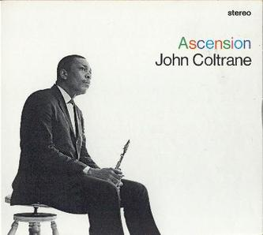
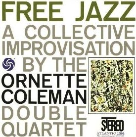

J’ai déjà eu l’occasion de parler ici de Wu Ming, un collectif d’écrivains italiens dont j’ai adoré OVNI 78 et Proletkult. Ce roman-ci est signé Wu Ming 1, c’est donc un ouvrage écrit par un seul membre du groupe (Roberto Bui de son vrai nom). Qu’il s’agisse des romans signés en commun ou en solo, signalons qu’on est encore très loin de les avoir tous en français et que c’est bien triste. Heureusement les éditions Métailié ont eu la bonne idée de faire traduire New thing il y a déjà bientôt vingt ans, alors profitons-en. Au programme, il est question de l’émergence du free jazz aux Etats-Unis dans les années 60 sur fond de mouvements afro-américains et de troubles sociaux.

Sur la forme, New thing s’inspire de Please Kill Me: L’histoire non censurée du punk racontée par ses acteurs, de Gillian McCain et Legs McNeil (et il me rappelle donc le formidable Outrage et rébellion de Catherine Dufour qui en avait aussi repris le concept). La plupart du temps, il s’agit donc d’un enchaînement de témoignages, de souvenirs évoqués par les protagonistes qui sont autant de narrateurs. Par moment, on plonge directement dans les pensées de rien de moins que John Coltrane, sur le point de décéder d’un cancer, quand on ne parcourt pas des coupures de presse relatives aux événements. Ces derniers, justement, se concentrent sur une série de meurtres de jazzmen noirs à New York et sur l’enquête de la journaliste Sonia Langmut (en permanence équipée d’un enregistreur portatif), disparue peu de temps après le décès de Coltrane.

Comme souvent avec Wu Ming, le roman mélange réalité et fiction (l’auteur démêle le vrai du faux en fin de livre) pour raconter au bout du compte une histoire très politique (OVNI 78 fonctionne de la même manière). Et puis comme souvent avec Wu Ming, ça marche super bien. En un peu plus de 200 pages, alors qu’on cherche à savoir qui est l’auteur des meurtres, on est plongé en plein dans l’atmosphère new-yorkaise des années 60, qui mêle le free jazz (outre Coltrane, on y cause de tout un tas de musiciens tels que Archie Shepp, Ornette Coleman, Sun Ra…) et l’histoire des mouvements afro-américains de l’époque (le mouvement des droits civiques avec Martin Luther King, mais aussi le Black Power, le Black Panther Party ou encore le parcours du militant Stokely Carmichael), sans manquer de s’attarder sur les magouilles des autorités américaines pour les déstabiliser, avec notamment le programme Cointelpro. En gros, il y a de la matière, mais le tout est super bien construit, les éléments se recoupent nickel, le fond et la forme se marient à merveille et ça donne envie d’écouter du jazz (même si c’est pas tout de suite que j’y comprendrai quoi que ce soit au free jazz).
Titre original : New thing / Sortie originale (italien) : 2004 / Version française : 2007 (traduction : Serge Quadruppani)
Images :
- Cover de l’album Ascension, de John Coltrane, sorti en 1966
- Cover de l’album Free Jazz: A Collective Improvisation, d’Ornette Coleman, sorti en 1960